Described by Cicero as "the greatest Greek city and the most beautiful of them all", Siracusa (and specifically the island of Ortigia) is a true original. The patron saint of the city is Saint Lucy (Santa Lucia) who was martyred as she refused to burn a sacrifice to the emperor Diocletian and was then sentenced to be "defiled in a brothel". Christian tradition states that when the guards came to take her away, they could not move her even when they tied her to a team of oxen. Bundles of wood were then heaped about her and set on fire, but would not burn. Finally, she met her death by the sword or, in some accounts, had her eyes gouged out. The Franciscan Church of Santa Lucia al Sepulchro commissioned Caravaggio (on the run from Malta and on his way to Messina) to paint The Burial of Santa Lucia which he completed in 1608.
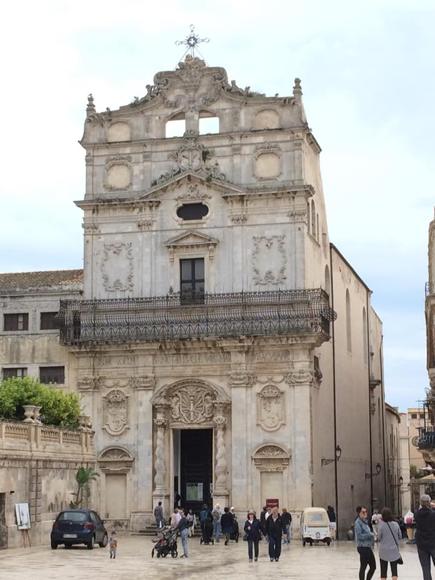
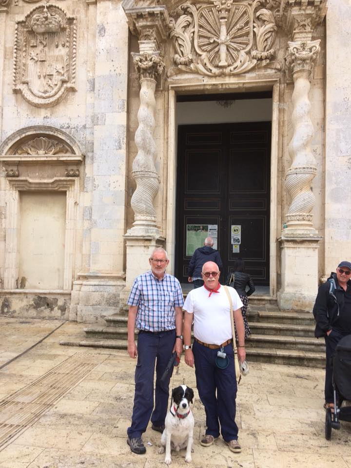
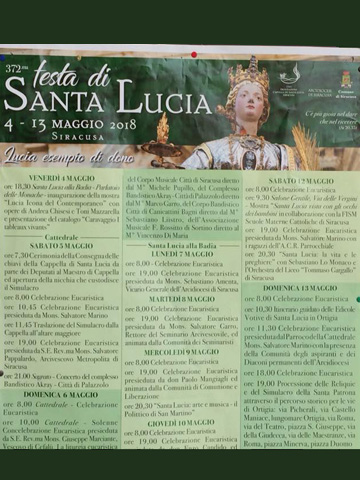
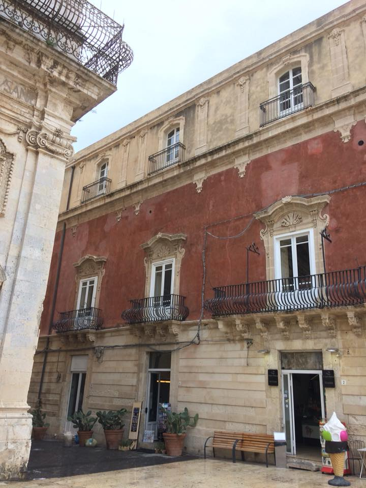
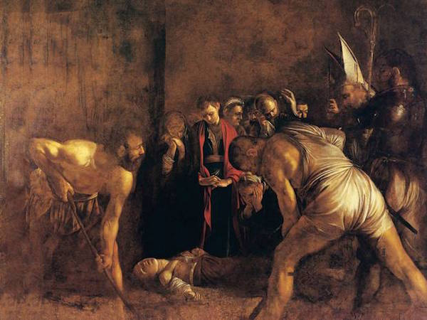
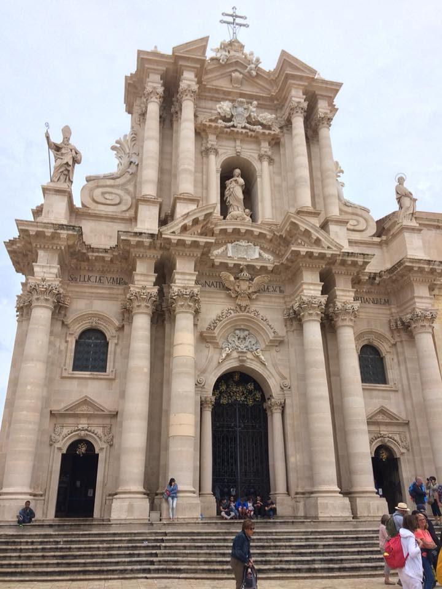
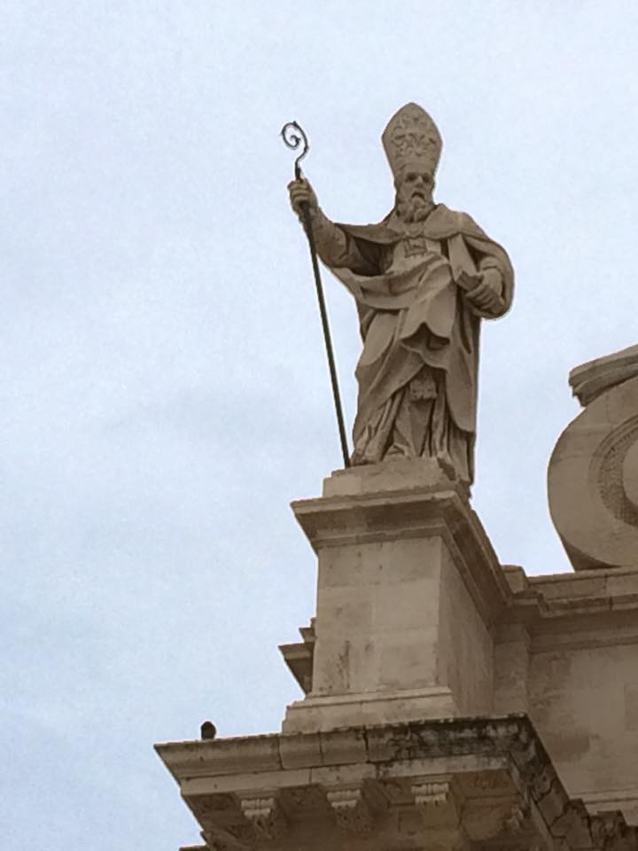
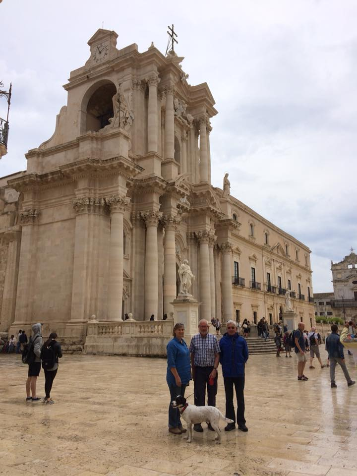
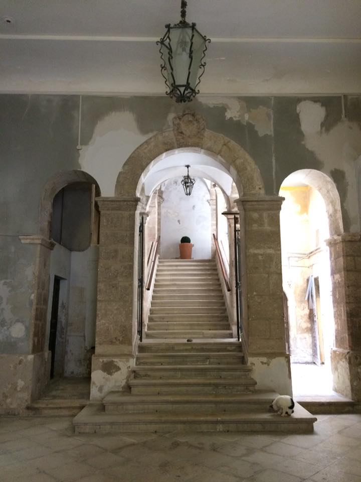
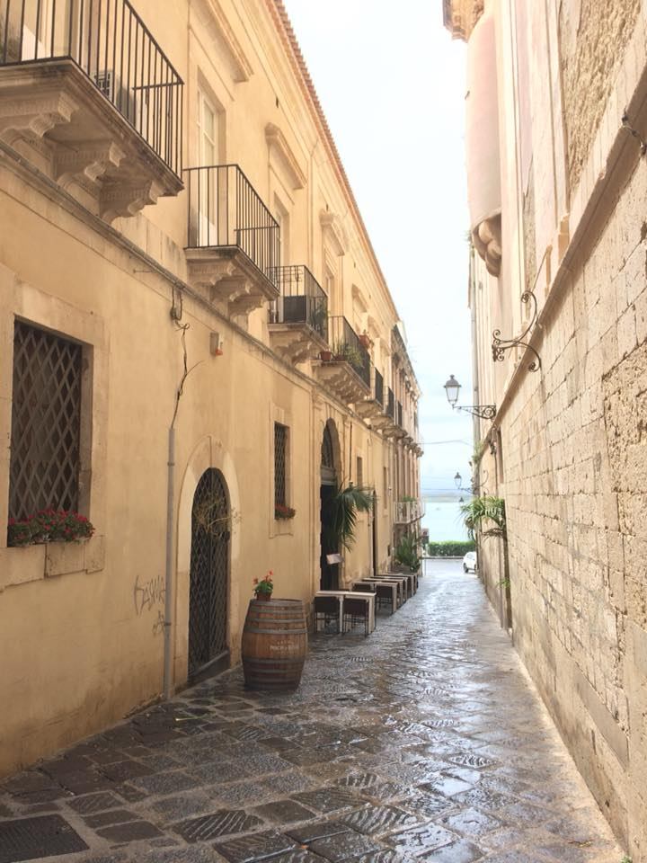
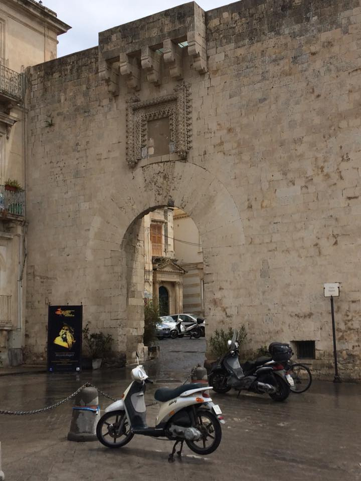
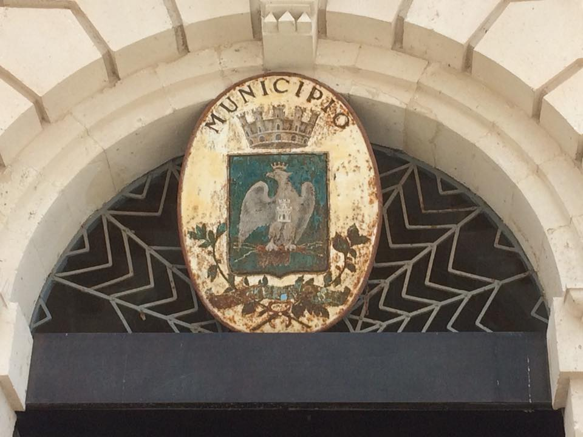
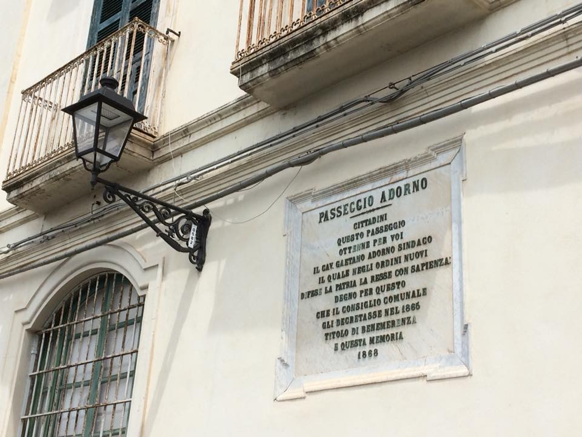
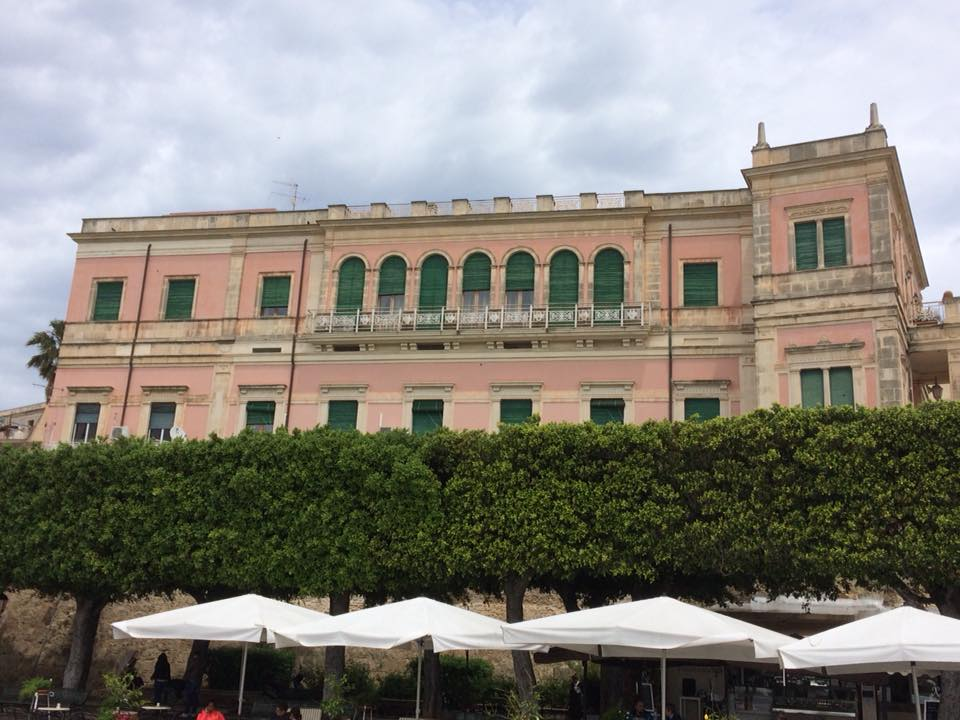
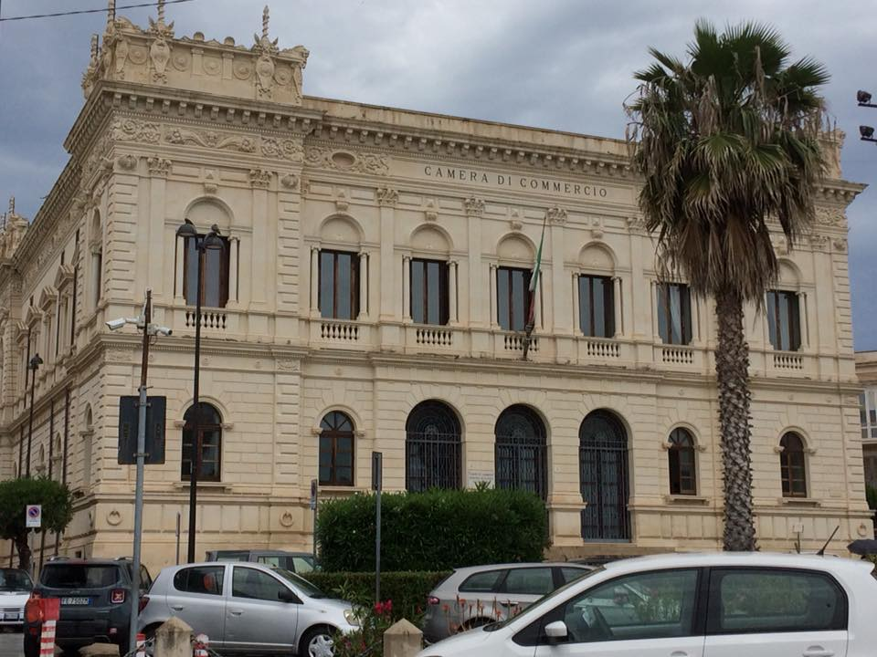